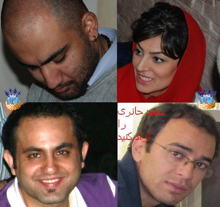

|
|
ملاقات چندتن از اعضای کمیته گزارشگران حقوق بشر با خانوادههایشان
يكشنبه2 اسفند 1388

کمیته گزارشگران حقوق بشر - روز پنجشنبه 29 بهمنماه تعدادی از اعضای دربند کمیته گزارشگران حقوق بشر موفق به ملاقات با خانوادههایشان شدند. در حال حاضر شش تن از اعضای کمیته همچنان در بازداشت نیروهای امنیتی به سر میبرند.
کوهیار گودرزی در ملاقات با مادرش از ادامه بازجویی خبر داد و ابراز نمود به نظر نمیرسد به زودی آزاد شود. این فعال حقوق بشر اتهاماتش را اقدام علیه امنیت ملی از طریق مصاحبه با رسانههای خارجی و محاربه عنوان نمود. به نظر میرسد فشار بر این فعال حقوق بشر برای پذیرفتن اتهامات واهی ادامه دارد.
مهرداد رحیمی، فعال سیاسی مدنی در ملاقات با خانوادهاش از بلاتکلیفی خود در زندان اوین ابراز نارضایتی نمود. این فعال حقوق بشر در هفتههای اخیر فشار بسیاری را جهت اخذ اعترافات تلویزیونی تحمل نموده اما همچنان بر مواضع خود ایستاده و بازداشت خود را غیرقانونی دانسته است. سعید حائری دیگر عضو کمیته نیز در حالی با خانوادهاش ملاقات کرد که قرار بازداشت موقت وی به اتمام رسیده و هیچگونه اقدامی جهت تمدید یا تبدیل قرار بازداشت وی صورت نپذیرفته و وی در بلاتکلیفی به سر میبرد.
همچنین شیوا نظرآهاری، دیگر عضو کمیته نیز در ملاقات با خانوادهاش از انتقال خود به سلول دونفره خبر داد. این در حالی است که وی بیش از 60 روز را در سلول انفرادی و چند روز را در سلولی بسیار کوچک و شبیه قفس سپری کرده بود.
سعید جلالیفر و سعید کلانکی دو عضو دیگر کمیته نیز حدود 90 روز است که در زندان اوین به سر میبرند. گزارشها حاکی از تمدید قرار بازداشت سعید کلانکی و تفهیم اتهام فعالیت تبلیغی علیه نظام برای سعید جلالیفر است.